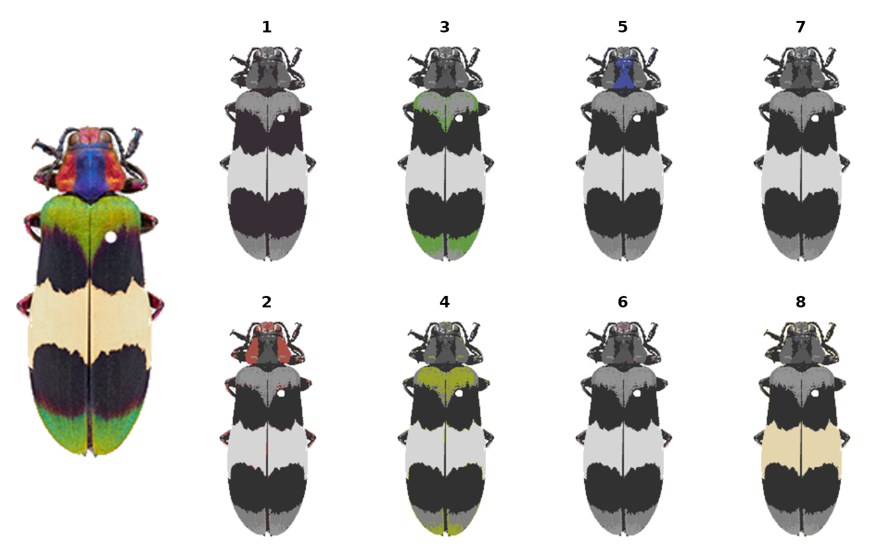
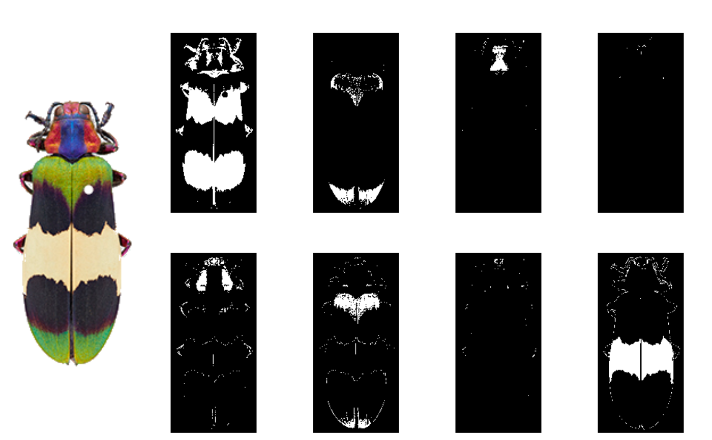
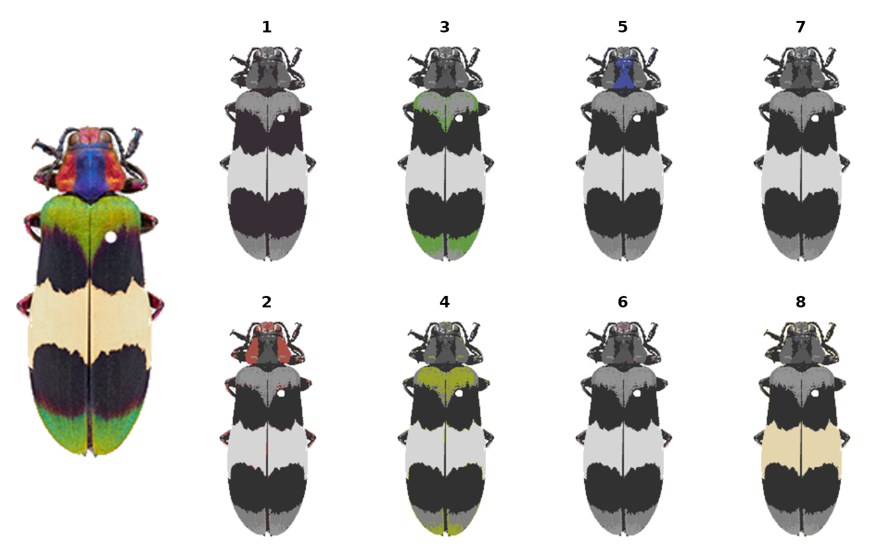
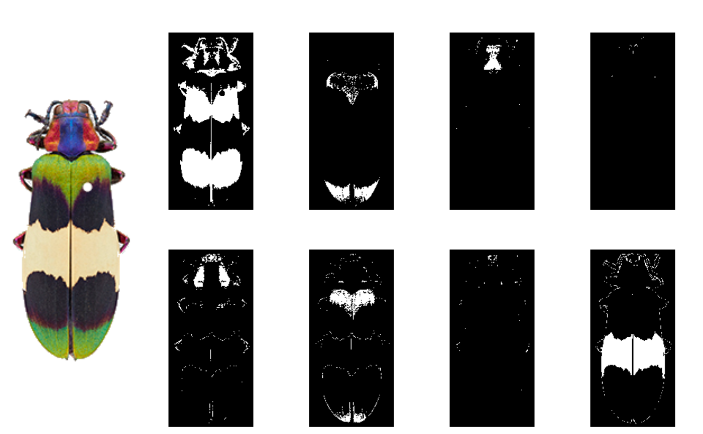

Separates color clusters from a recolorize(),
recluster(), or imposeColors() object
into binary masks.
Usage
splitByColor(
recolorize_obj,
layers = "all",
plot_method = c("overlay", "binary", "colormask", "none")
)Arguments
- recolorize_obj
A recolorize object from
recolorize(),recluster(), orimposeColors().- layers
Either
"all"or a numeric vector of which color centers to return.- plot_method
Plotting method for plotting the color layers. Options are
"overlay","binary","colormask", or"none".
Value
A list of binary matrices (1/white = color presence, 0/black = color absence), one per color center.
Examples
# get original fit
corbetti <- system.file("extdata/corbetti.png", package = "recolorize")
recolored_corbetti <- recolorize::recolorize(corbetti, plotting = TRUE)
#>
#> Using 2^3 = 8 total bins
 # to reset graphical parameters:
current_par <- graphics::par(no.readonly = TRUE)
# make a layout
layout(matrix(c(1, 1:9), nrow = 2))
par(mar = c(0, 0, 2, 0))
# plot original
plotImageArray(recolored_corbetti$original_img)
# plot layers
corbetti_layers <- splitByColor(recolored_corbetti, plot_method = "over")

# plot binary maps
plotImageArray(recolored_corbetti$original_img)
for (i in 1:length(corbetti_layers)) {
plotImageArray(corbetti_layers[[i]])
}

graphics::par(current_par)
# to reset graphical parameters:
current_par <- graphics::par(no.readonly = TRUE)
# make a layout
layout(matrix(c(1, 1:9), nrow = 2))
par(mar = c(0, 0, 2, 0))
# plot original
plotImageArray(recolored_corbetti$original_img)
# plot layers
corbetti_layers <- splitByColor(recolored_corbetti, plot_method = "over")

# plot binary maps
plotImageArray(recolored_corbetti$original_img)
for (i in 1:length(corbetti_layers)) {
plotImageArray(corbetti_layers[[i]])
}

graphics::par(current_par)